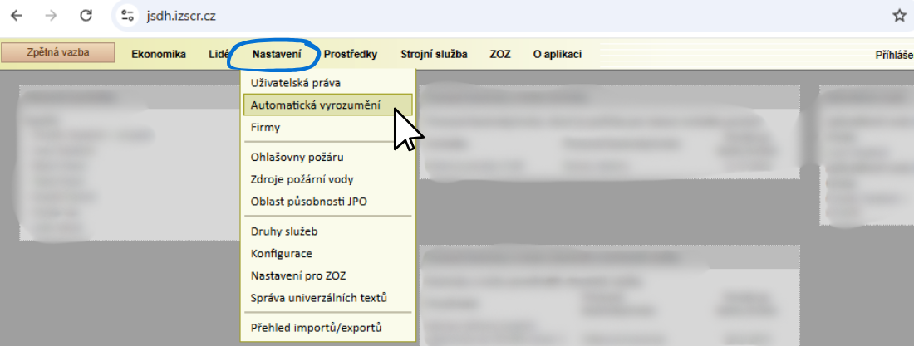
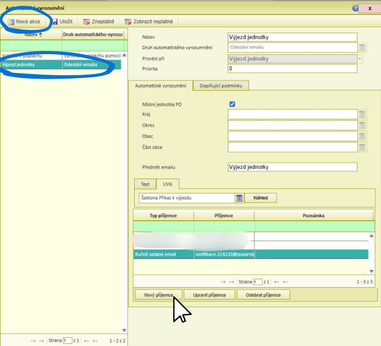

Instrukce pro nastavení PORT.ALL
Pro fungování aplikace Požární poplach je nutné nastavit příjem notifikací o výjezdech.
Otevřete webovou aplikaci PORT.ALL.
Při přihlašování si poznamenejte evidenční číslo vaší jednotky. Na ukázce je evidenční číslo
21A133.
V menu klikněte na Nastavení a zvolte Automatické vyrozumění.
Pokud v levém menu již máte položku Výjezd jednotky - Odeslání emailu, klikněte na ni. V opačném případě klikněte na Nová akce.
Poté klikněte na tlačítko Nový příjemce.
Typ příjemce zvolte Pevně zadaná hodnota.
Do kolonky Email vložte adresu ve formátu
notifikace.VAŠE-EV-ČÍSLO@pozarnipoplach.cz.
Například, pokud má vaše jednotka evidenční číslo 21A133, zadáte emailovou adresu
notifikace.21A133@pozarnipoplach.cz.
Nakonec nezapomeňte stisknout Uložit pro uložení nového nastavení.